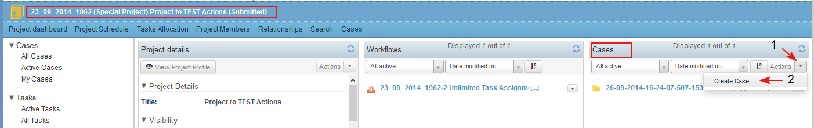

The use case describes the requirements to the content to be displayed on the Cases dashlet, requirements on filtering cases and actions on cases.
The Cases dashlet is context dependent and the content displayed on it depends on whether the dashlet is on the Personal or Project dashboard:
- On the Personal dashboard the My Cases dashlet lets the user view and manage the cases that are assigned to him/ her. The user has an individual role of "Collaborator" or "Contributor" in these cases. This means that there is a task assigned to current user, or specific permissions are given or the user has created the case.
- On the Project dashboard the Cases dashlet displays the cases, which are part of the project.
- In the header of the dashlet is displayed the number of projects in the dashlet and the total number of all projects of the same type to which the user has access (1).
- The following case filters, selectable from the drop down lists are applied on the dashlet:
- The filter by user role in the Personal Dashboard/ My Cases Dashlet (2) has the following options:
- Active cases (default) - this is the default filter and when selected the user sees all cases in Active state (Submitted, In progress, Approved, Suspended) for which he/ she the creator of the case or there is an active task in the case, assigned to him/ her.
- Created by me - the filter displays only active cases that are crеated by the current user
- Cases with active tasks assigned to me - the filter displays only active cases in which there is at least one active task (submitted, approved, in process, suspended) assigned personally to the current user
- Overdue cases - the filter when selected displays only cases with end date that has passed (before the current date) AND cases (I am creator of the case or there is an active task in the case, assigned to me)
- Cases worked on by me – the filter when selected displays only active cases with at least one completed task, assigned to me. These are the cases that the current user used to work on, finished his job, but the cases are still active, and someone still works on them.
- The items in the dashlet may be sorted by the following criteria, selectable from the drop down list (3):
- Date modified on - this is the default sort criteria, descending order (the items recently created/ updated are on the top)
Title
Priority
Planned Start date
Planned End date
Status
- The filter by user role in the Personal Dashboard/ My Cases Dashlet (2) has the following options:
- For each combination of criteria the user is able to sort the items in the dashlet in ascending or descending order (4).
- Next to each case details in the dashlet there is a list with available actions on the case (5). The actions are restricted by user's role in the project and in the case.
- The cases are sorted in the dashlet by date of creation/ modification and the latest one are on the top.

- For each case in the dashlet is displayed:Case ID, Case Title, Case Type (optional), Status (1). They are a link to open the case dashboard of the corresponding case.
- There is a tool tip (2) for each case in the dashlet . The tool tip is visualized when the user passes the cursor over a selected case. In the tool tip there is more information about the user who last modified the case and the time of last modification.

- Next to each case in the cases dashlet there is a list with available actions on the case (restricted by user role in the project and case dashboards), which in general include: Edit Case Details, Start Case, Create Task, Start Workflow (1-2).

- A new case could be created from the Project Dashboard/ Cases dashlet/ Actions/ Create Case (1-2). The actions is available for users with corresponding permissions.
